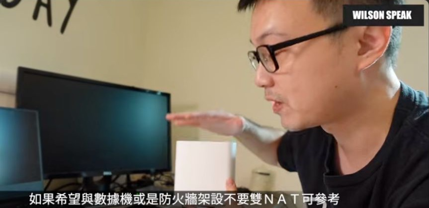

AiMesh 有線回程怎麼接？光世代、ZenWiFi 與交換器的分工

原片發布 2021-08-27 · 頻道累積觀看第 7 名（2026.11.13 查核）· 點封面看原片。
每個房間都有網路孔，Mesh 卻還在靠無線互傳？有線回程能把節點之間的連線交給網路線，但插線以前，先確認誰是主路由、誰是節點，會少掉很多排查。
這篇延伸自 2021 年 ZenWiFi XD6 的教學，搭配 ASUS 目前的官方接線文件整理。舊片介面與你手上的韌體可能不同，重點先放在拓樸與驗收，選單再依型號確認。
有線回程，是幫節點之間鋪一條路
手機連上房間節點後，資料還需要從節點送回主要網路。這段就叫回程。有線回程把這一段放到乙太網路上，能減少對節點間無線鏈路的依賴，但線材、網路埠和交換器仍然可能限制傳輸。
先確認牆上的網路孔實際通到哪裡。有孔不一定表示已接好，也不一定連在同一個內部網路。查看配線箱標示、測試線路，再安排節點與交換器，會比買好設備才發現線都在錯邊容易處理。
先決定誰當主路由，才知道線怎麼走
AiMesh 主機和家中主路由，不一定永遠是同一個角色。若 AiMesh 主機用路由器模式，它管理自己的家用網段；若主機用 AP 模式，家用路由工作則由上游設備負責，其他 AiMesh 設備仍依系統作為節點加入。
先決定這件事，才知道交換器要放哪一側。不要把仍用路由器模式的主機與它的節點，隨意並聯到主機的 WAN 上游。這會讓它們不在預期拓樸中，並不等同於正確架好有線回程，也不能直接用「雙重 NAT」概括所有問題。
依 ASUS 官方一般拓樸整理。主機採 AP 模式時，須另確認上游 DHCP 與對應接法。
AiMesh 當主路由，交換器放在它後面
當 AiMesh 主機用路由器模式時，常見接法是上游接主機 WAN，主機 LAN 再接家用交換器，其他節點的 WAN 接到這台交換器。主機的連外方式仍要符合業者配置，不是每個環境都使用 PPPoE。
這樣交換器與節點位在主機的內部 LAN 側。若房間線路集中在配線箱，就要確認回到配線箱的線，接的是主機 LAN，而不是只和進線設備排在一起。設定 Mesh 配對與各埠角色時，照自己的型號文件完成。
- 確認 AiMesh 主機是路由器模式，且本身已能正常連外。
- 將主機 LAN 接到內部交換器。
- 依官方接法把節點 WAN 接到該交換器，確認沒有多餘環路。
上游已經管網路，才考慮 AP 模式並聯
若上游已負責自家路由與 DHCP，並允許所需設備取得位址，ASUS 文件也提供主機採 AP 模式、透過上游交換器連接的拓樸。這有前提，不能只因數據機有很多孔，就假設一定可以並聯。
依官方列出的該情境，主機以指定 LAN 孔連上游，節點以 WAN 孔接同一個合適網路；實際孔位與機型支援仍須核對。若業者限制取得位址的設備數，或上游是共享網路，先確認服務條件與安全區隔，別直接套用。

插了網路線，還要確認真的走有線
接線完成後，到 AiMesh 拓樸或節點管理頁查看回程類型。畫面仍顯示無線時，先確認線材、牆內配線、交換器與孔位，再看系統是否需要設定連線優先權。不要只看到電腦能上網，就認為節點已經走有線。
ASUS 另有全系統的 Ethernet Backhaul Mode 和個別節點的回程優先權選項。全系統模式適合所有節點都有線等符合條件的情況；若有線、無線混用，就依支援的每節點設定處理。一般外接電源的節點，不需要為了回程另外要求交換器支援 PoE。
- 在管理頁確認每一個節點實際使用的回程類型。
- 先以已知正常的短線測試，再排查牆內線與交換器。
- 依節點是否都有線，選擇適用的回程設定。
回程穩了，房間裡的 Wi-Fi 仍要測
回程正常後，再用常用手機和筆電回到原本會卡的位置測試。手機到節點的無線連線還是存在，節點如果被藏在櫃子裡或放在不合適的位置，房間內仍可能有問題。有線回程改善的是其中一段，不是整條路徑的保證。
除了測速，也做一次視訊、播放或實際傳檔。記下當時連到哪個節點，並比較靠近節點和遠處的差異。若只在某一個位置不順，優先處理覆蓋；若所有位置都慢，再回頭看主機、上游方案與其他共用鏈路。
你可能還想問
所有節點都要手動改成 AP 模式嗎？
不用這樣理解。依官方流程設定主機的運作模式，再把其他設備加入為 AiMesh 節點；不要把每台都各自當獨立 AP 設定。
上游設備有多個孔，就可以把主機和節點全插上去？
不一定。要先確認主機模式、上游 DHCP 與設備數限制，再依官方對應拓樸接線；路由模式不能直接套 AP 模式的並聯圖。
有線回程後，寬頻上網一定變快嗎？
不一定。它改善的是節點回程條件，連外方案、終端 Wi-Fi、線路與埠速度仍然可能是瓶頸，需以實際工作驗收。
影片與參考資料
原片發布：2021-08-27。文章整理：2026-11-14。這是影片主題的延伸閱讀，已對照公開字幕、說明與下列官方資料校訂；實際介面與支援條件依型號、版本確認。